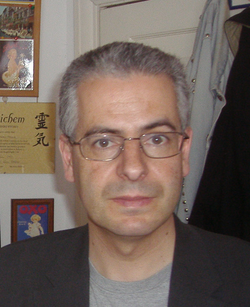

Nick Pope
Ministry of Defence official and UFO commentator, 1965 to 2026

A British civil servant at the Ministry of Defence from 1985 to 2006 who, from 1991 to 1994, handled the department's UFO reports, including the 1993 Cosford incident. His 1996 book Open Skies, Closed Minds argued that some cases deserved serious study. 1
He later became a familiar commentator on UFOs in the press and on television, often saying most sightings have ordinary explanations while a small share stay unexplained. He died in April 2026. 1
Open in the interactive Watcher
Related
- Ministry of Defence UFO desk
- Cosford incident
- Open Skies, Closed Minds Open Skies, Closed Minds, 1996
Sources
- Nick Pope (journalist) Wikipedia